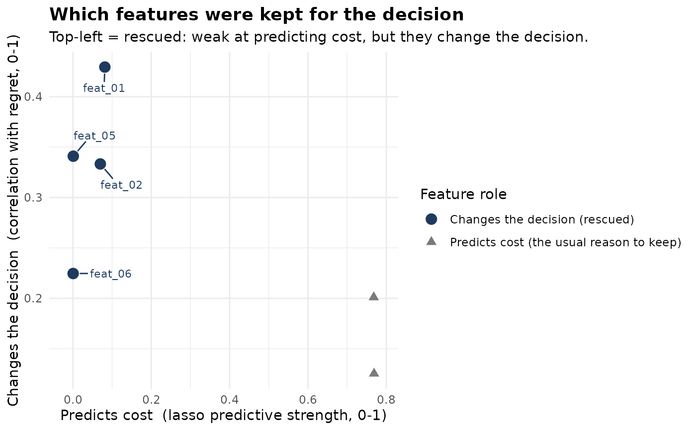
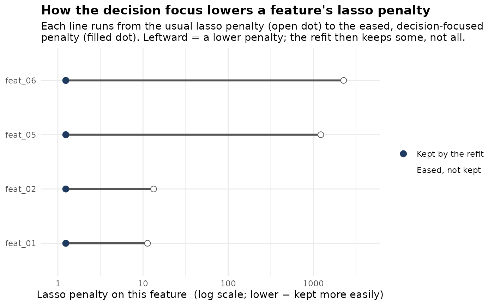

Three views of a DecisionFocusedLasso fit, each a ggplot. The default
"roles" view shows which features look weak at predicting cost yet move the
decision, so the method kept them. "penalty" shows how much the decision
focus eased the penalty on those features; "path" shows the coefficient
path of the decision-focused fit.
Arguments
- object, x
A DecisionFocusedLasso object.
- type
Which view to draw:
"roles"(default),"penalty", or"path".- ...
Unused, present for method compatibility.
Examples
sim <- simulate_capital_allocation(60, 6, 6, seed = 1)
fit <- dfl_fit(
sim$x, sim$cost, sim$scenario,
problem = capital_allocation_problem(max_weight = 0.5),
element_id = sim$element_id,
control = dfl_control(seed = 1, n_splits = 5L)
)
plot(fit)

plot(fit, type = "penalty")
